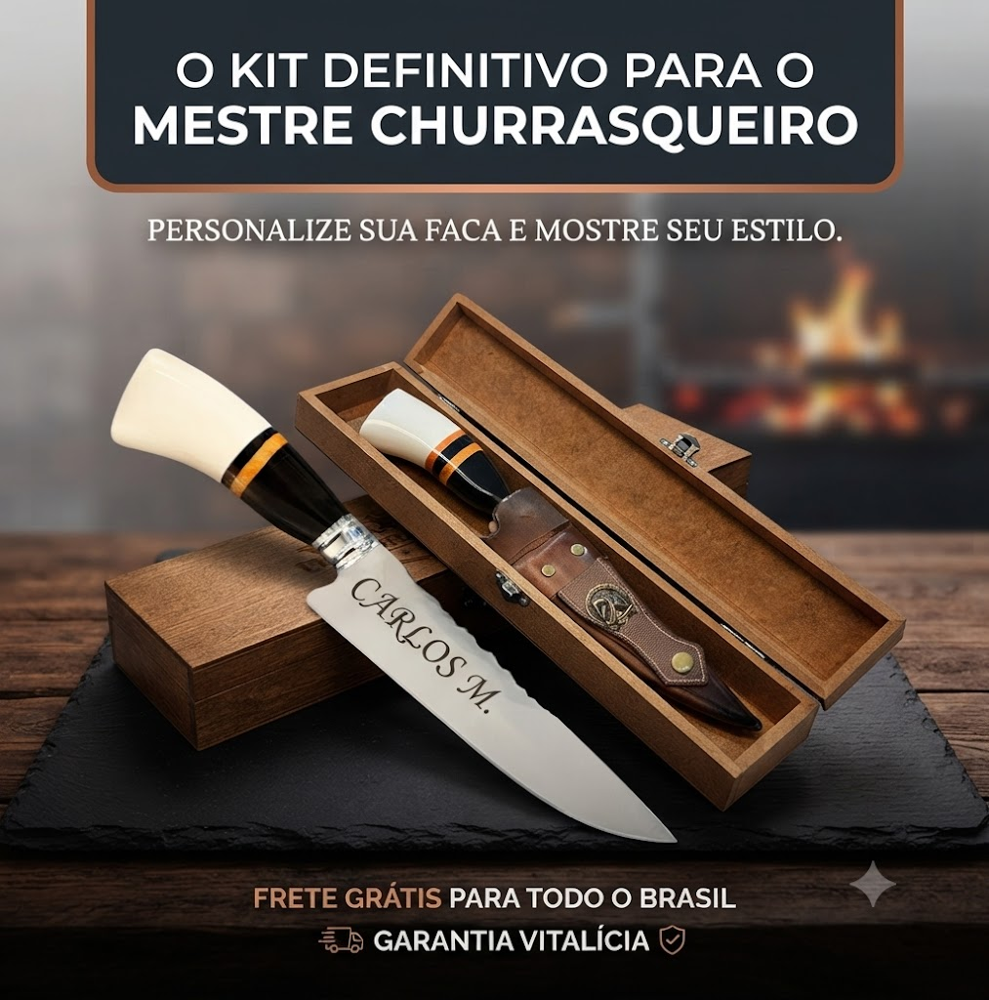

Eleve o nível dos seus finais de semana. Faca artesanal de alta performance gravada a laser com seu nome, brasão ou logo da sua empresa. O presente perfeito ou o instrumento ideal para o verdadeiro churrasqueiro.
Compra 100% Segura • Envio Rápido para Todo o Brasil

Gravação a Laser de Alta PrecisãoQualidade de ponta combinada com a exclusividade da personalização sob medida.
Grave seu nome, apelido, brasão favorito ou a logo da sua marca diretamente na lâmina com acabamento profissional.
Desenvolvida para durar gerações. Lâmina robusta que mantém o fio por muito mais tempo, ideal para carnes duras e cortes perfeitos.
Surpreenda aquele amigo churrasqueiro, seu pai, padrinho ou chefe com um item único que ele jamais vai esquecer.
Não perca tempo. Garanta agora mesmo a sua faca artesanal diretamente pelo Mercado Livre com total segurança e praticidade.